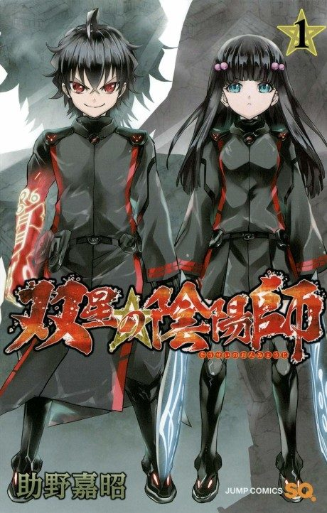

Twin Star Exorcists
双星の陰陽師
After the anime, read the manga from Chapter 16.
6.9AniList score
—Animeter, no votes yet
50episodes
Rate it or report where you stopped
Anime finished. Where does the manga pick up?
Start at Chapter16
The anime adapts the manga through chapter 15 (episode 20); read chapter 15 first as it differs, then continue at chapter 16. Episodes 21-50 are anime-original filler and the manga was later finished at 142 chapters.
115142 end
Season 1Start reading here